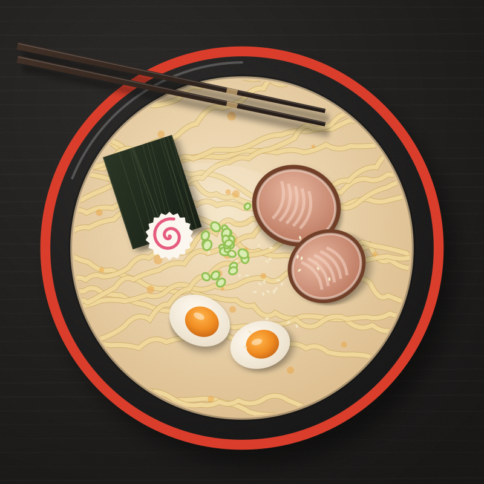
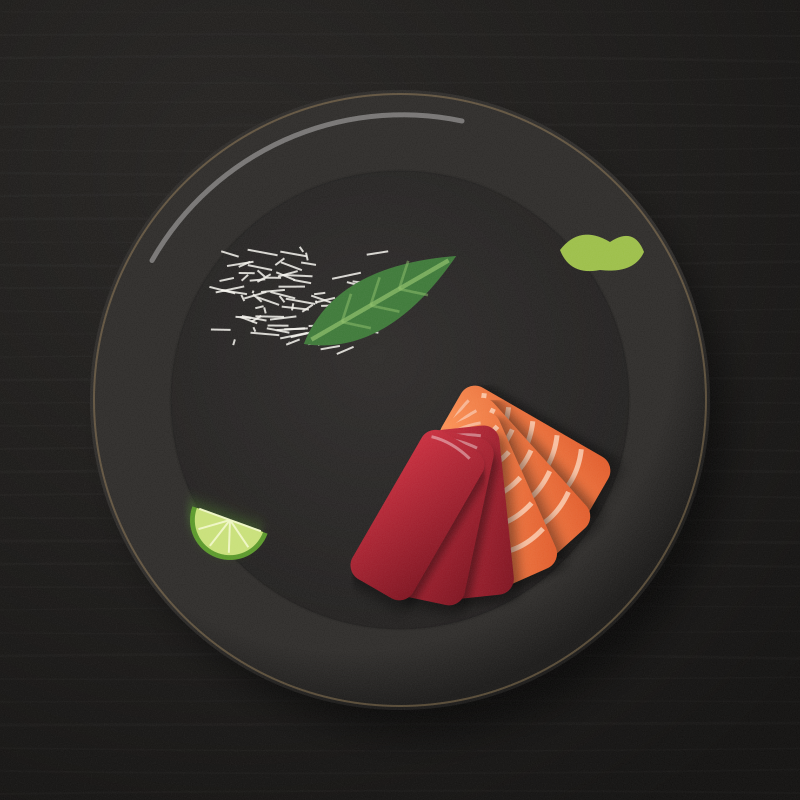

{{ r.countryName }}
{{ r.title }}
{{ r.desc }}
Asian Culinary Experience
Asian Culinary Experience 東洋の味
Receitas testadas, histórias de mesa e técnicas de cinco cozinhas asiáticas — do caldo de ramen que ferve por oito horas ao matcha batido em quinze segundos. Para quem cozinha com curiosidade.
Tradições milenares. Experiências inesquecíveis.

01Cinco cozinhas
Cada país tem sua própria gramática de sabor. Escolha por onde começar a viagem.
02Receitas populares
{{ r.desc }}
03Escolhas do chef · Outubro
“A estação decide o cardápio antes de nós. Cozinhar a Ásia no Brasil é traduzir esse calendário para os ingredientes daqui.”
Experiência interativa
Cinco perguntas rápidas sobre intensidade, pimenta, temperatura, proteína e tempo. No fim, três pratos escolhidos para o seu paladar — com o porquê de cada um.
04Curiosidades culturais
Toque em cada cartão para revelar a história por trás do costume.
05Newsletter
Toda quinta: um prato, um ingrediente explicado e uma técnica para praticar no fim de semana.
O e-mail {{ news.email }} está correto. Esta é uma demonstração sem servidor: nenhum dado foi enviado ou armazenado.
Catálogo de receitas
{{ recipeCount }} receitas de cinco países, escritas para a cozinha de casa — com quantidades, tempos reais e o conselho do chef que costuma faltar nos livros.
{{ f.count }} {{ f.countLabel }}
{{ r.desc }}
{{ f.emptyMsg }}
Países e culturas
Fermentação coreana, a subtração japonesa, o equilíbrio tailandês, o frescor vietnamita e as muitas Chinas que cabem num wok. Escolha um país.
{{ cc.no }} · {{ cc.roman }}
{{ cc.intro }}
{{ t }}
Galeria
Dez pratos que definem suas cozinhas de origem. Passe o cursor — ou toque — para conhecer cada um e abrir a receita completa.
{{ g.countLabel }}
{{ g.emptyMsg }}
A despensa oriental
Origem, sabor, usos, combinações e como guardar. Abra um cartão para estudar o ingrediente — e depois coloque-o em prática nas técnicas abaixo.
{{ i.flavor }}
{{ i.taste }}
{{ i.uses }}
{{ i.pairs }}
{{ i.storage }}
04Técnicas
{{ tech.intro }}
{{ tech.tip }}
Experiência interativa
Responda cinco perguntas. Calculamos, aqui mesmo no seu navegador, quais das nossas {{ recipeCount }} receitas conversam melhor com o seu paladar — e explicamos o motivo.
{{ q.cur.kicker }}
Seu perfil de sabor
{{ q.profile.desc }}
{{ q.drink }}
Sobre a AKARI
Em japonês, akari é a luz suave de uma lanterna — aquela que não ofusca, apenas revela. É o que queremos fazer com a cozinha asiática: iluminar o que já está lá, com respeito pela origem de cada prato.
A AKARI nasceu de cadernos de viagem cheios de receitas anotadas à mão, perguntas feitas em bancas de rua e muitas tentativas na cozinha de casa até que o caldo ficasse certo.
Manifesto
Acreditamos que uma receita é um documento cultural, não um atalho.
Que o dashi merece os seus vinte minutos. Que o kimchi precisa de tempo. Que o curry começa no pilão.
Que a Ásia não cabe numa palavra só — e que cada cozinha deve ser chamada pelo próprio nome.
E que cozinhar é a forma mais saborosa de viajar sem sair de casa.
01Valores
Dizemos de onde o prato vem, qual região o criou e o que mudou na adaptação. Japonês é japonês; coreano é coreano.
Explicamos o porquê de cada etapa — lavar o arroz, quebrar o coco, escaldar o tofu — para que você cozinhe com autonomia.
As escolhas do chef seguem o calendário: o da Ásia, e o da feira brasileira onde você vai comprar os ingredientes.
Banchan, dim sum, rolinhos para enrolar à mesa: grande parte dessas cozinhas foi feita para dividir. Nossas receitas também.

02Filosofia gastronômica
A culinária japonesa fala em go mi, os cinco sabores; a tailandesa busca o ponto em que doce, azedo, salgado e picante se sustentam; a chinesa organiza o prato em harmonia de cores, aromas e texturas. Línguas diferentes para uma mesma ideia: nenhum elemento deve gritar sozinho.
Por isso nossas receitas indicam onde provar, o que ajustar e quando parar.
“Prove. Ajuste. Prove de novo. A receita termina na sua língua, não no papel.”
03Linha do tempo
{{ t.d }}
04Em números
Contato e newsletter
Dúvidas sobre uma receita, sugestões de pratos ou parcerias: escreva. Respondemos quem cozinha.
Todos os campos estão corretos. Como este site é uma demonstração sem servidor, a mensagem não foi enviada — em produção, este é o ponto em que ela seguiria para a equipe AKARI.
Assunto: {{ c.subjectLabel }} · {{ c.msgLen }} caracteres
Newsletter
Toda quinta, um prato com sua história, um ingrediente explicado e uma técnica para praticar.
Demonstração: nenhum dado foi enviado ou armazenado.
Redes sociais
Perfis demonstrativos: a AKARI é uma marca fictícia, então estes endereços ainda não existem.
Página não encontrada
O endereço “{{ badPath }}” não existe por aqui. Que tal voltar à cozinha?
{{ m.r.countryName }} · {{ m.r.catLabel }}
{{ m.r.desc }}
Toque para marcar o que já separou · {{ m.checkedCount }}/{{ m.ingCount }}
Toque em cada etapa ao concluí-la · {{ m.doneCount }}/{{ m.stepCount }}
{{ m.r.tip }}
{{ m.r.plating }}